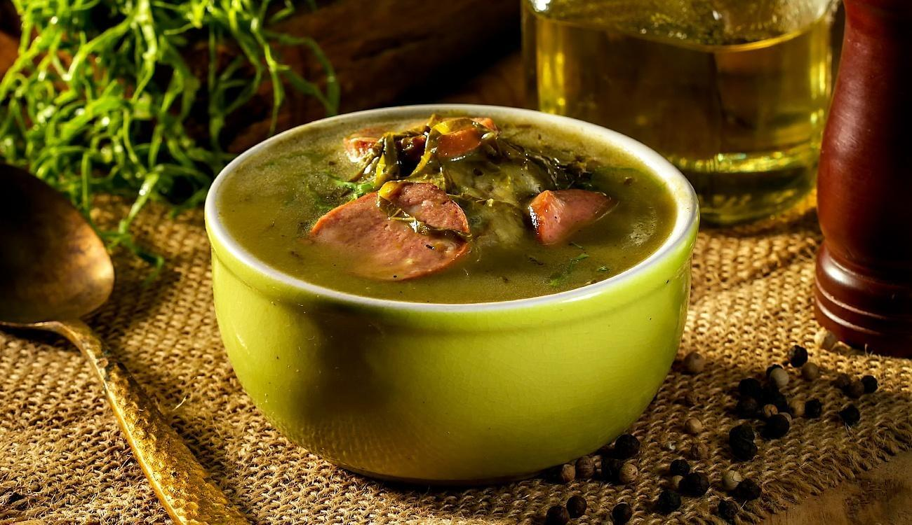

🍲 Receitas de Caldos & Sopas
Caldo de kenga
Um caldinho quentinho é tudo de bom, ainda mais em dias mais frios. Hoje vocês vão aprender uma receita com um nome um pouco diferente que é absurdamente saborosa, caldo de kenga.
➜ Ingredientes do caldo:
- 600g de peito de frango;
- 600g de mandioca;
- 250g de mandioquinha;
- 150g de cenoura;
- 1 unidade de cebola;
- 15g de sal (1 colheres de sopa);
- 1,5L de água 5L.
➜ Ingredientes do refogado:
- 150g de bacon picado;
- 1 unidade de cebola picada;
- 6 dentes de alho amassado;
- 170g de milho (1 lata);
- Sal a gosto;
- Pimenta do reino a gosto;
- Páprica a gosto;
- Cheiro verde picado a gosto.
➜ Modo de preparo:
- Coloque em uma panela de pressão todos os ingredientes do caldo (o peito de frango, a mandioca, a mandioquinha, a cenoura, a cebola, o sal e a água);
- Cubra com a água e tampe a panela;
- Leve ao fogo alto;
- Quando pegar pressão reduza o fogo, deixe ele bem baixinho e cozinhe por 25 minutos;
- Desligue o fogo e deixe a pressão sair naturalmente;
- Retire a mandioca e o frango;
- Da mandioca retire os fiapos centrais volte-a para a panela de pressão;
- Bata com um mixer ou se não tiver no liquidificador;
- Já o frango desfie bem e reserve;
- Em outra panela em fogo baixo acrescente o bacon e deixe que frite na própria gordura;
- Quando ele dourar retire metade (para finalização);
- Acrescente a cebola e o alho e refogue por 3 minutos;
- Junte o frango desfiado, o milho e tempere com sal, pimenta do reino e páprica e refogue por mais uns 3 minutos;
- Junte esse refogado na sopa batida;
- Caso fique muito grosso acrescente mais água quente;
- Desligue o fogo e acrescente a salsinha picada.
Caldo verde
É uma sopa portuguesa com certeza! Feito com couve, o caldo verde é uma sensação nos dias frios.
➜ Ingredientes do caldo:
- 3 batatas (cerca de 600g);
- 1 linguiça portuguesa (cerca de 200g);
- ½ cebola;
- 1,25 litro de caldo de carne caseiro;
- ½ maço de couve;
- sal e pimenta-do-reino moída na hora a gosto.
➜ Modo de preparo:
- Com uma faca, retire a pele da linguiça e corte em rodelas finas. Descasque e corte a cebola em meias-luas de 1 cm. Lave, descasque e corte as batatas em 8 pedaços;
- Leve uma panela média ao fogo médio. Quando aquecer, regue com ½ colher (sopa) de azeite, adicione as fatias de linguiça e deixe dourar por cerca de 5 minutos, mexendo de vez em quando. Reserve as linguiças douradas numa tigela;
- Abaixe o fogo, regue com ½ colher (sopa) de azeite, junte a cebola e tempere com uma pitada de sal. Refogue por cerca de 2 minutos até murchar e começar a dourar;
- Acrescente os pedaços de batata, o caldo de carne e aumente o fogo. Com uma espátula, raspe bem o fundo da panela para dissolver os queimadinhos – eles dão sabor à sopa;
- Assim que começar a ferver, abaixe o fogo novamente, tempere com sal e pimenta a gosto e deixe cozinhar por mais 25 minutos, ou até que as batatas fiquem macias – espete com um garfo para verificar o ponto;
- Enquanto isso, lave bem as folhas de couve sob água corrente e deixe escorrer o excesso de água. Descarte o talo e corte a couve ao meio, no sentido do comprimento. Corte as folhas ao meio novamente, no sentido do comprimento. Na tábua, disponha uma folha sobre a outra e corte em tirinhas finas – dessa forma, as tiras de couve não ficam tão longas, sendo mais fácil para comer de colher;
- Assim que estiverem bem cozidas, transfira as batatas com o caldo para o liquidificador. Bata por cerca de 2 minutos até formar um creme liso. Atenção: segure firme a tampa do liquidificador com um pano de prato para evitar que o vapor quente ejete a tampa;
- Volte o creme batido para a panela, junte a couve fatiada e as rodelas de linguiça douradas. Deixe cozinhar em fogo baixo por cerca de 5 minutos, até a couve ficar macia. Prove e, se necessário, acerte o sal. Sirva a seguir com um fio de azeite.
Sopa de cebola gratinada

A sopa de cebola é um clássico da culinária francesa, que ganha uma camada especial de sabor depois de ir para o forno com as fatias de pão italiano e queijo gruyère.
➜ Ingredientes da sopa:
- 500 g de músculo traseiro em cubos grandes;
- 2 litros de água;
- 1 cenoura;
- 1 cebola;
- 1 talo de salsão com as folhas;
- 1 folha de louro;
- 3 cravos-da-índia;
- 2 ramas de canela em rama;
- 5 grãos de pimenta-do-reino.
➜ Modo de preparo:
- Lave a cenoura e o salsão; descasque a cenoura e corte cada uma em 3 partes; descasque e corte a cebola ao meio. Numa das metades, prenda o louro com os cravos-da-índia;
- Junte todos os ingredientes na panela de pressão, cubra com a água, tampe e leve ao fogo alto. Assim que começar a sair vapor pela válvula, abaixe o fogo e deixe cozinhar por 20 minutos. Enquanto o caldo cozinha, aproveite para dourar as cebolas da sopa;
- Desligue o fogo e espere todo o vapor sair antes de abrir a panela. Coe o caldo e reserve. Por ser um caldo de cozimento rápido, você pode utilizar a carne e a cenoura em outras preparações.